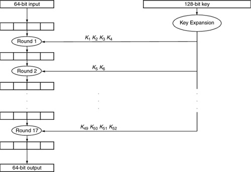
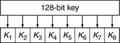
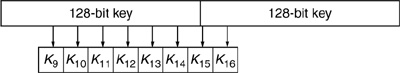
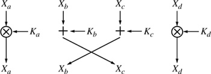
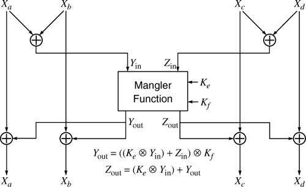

Networking Security Networking Security Networking Security Security Networking Security Networking Security Networking Charlie Kaufman Radia Perlman Mike Speciner Prentice Hall Network Security: Private Communication in a Public World, Second Edition Networking Security Networking Security Networking Security Security Networking Security Networking Security Networking Charlie Kaufman Radia Perlman Mike Speciner Prentice Hall Network Security: Private Communication in a Public World, Second Edition
3.4. International Data Encryption Algorithm (IDEA)
IDEA (International Data Encryption Algorithm) was originally called IPES (Improved Proposed Encryption Standard). It was developed by Xuejia Lai and James L. Massey of ETH Zuria.
IDEA was designed to be efficient to compute in software. It encrypts a 64-bit block of plaintext into a 64-bit block of ciphertext using a 128-bit key. It was published in 1991, so cryptanalysts have had time to find weaknesses. So far none has been found, at least by the good guys (the ones who would publish their results).
IDEA is similar to DES in some ways. Both of them operate in rounds, and both have a complicated mangler function that does not have to be reversible in order for decryption to work. Instead, the mangler function is run in the same direction for encryption as decryption, in both IDEA and DES. In fact, both DES and IDEA have the property that encryption and decryption are identical except for key expansion. With DES, the same keys are used in the reverse order (see Homework Problem 11); with IDEA, the encryption and decryption keys are related in a more complex manner.
3.4.1. Primitive Operations
Each primitive operation in IDEA maps two 16-bit quantities into a 16-bit quantity. (In contrast, each DES S-box maps a 6-bit quantity into a 4-bit quantity.) IDEA uses three operations, all easy to compute in software, to create a mapping. Furthermore, the operations are all reversible, which is important in order to run IDEA backwards (i.e., to decrypt).

The operations are bitwise exclusive or ( ), a slightly modified add (+), and a slightly modified multiply (). The reason add and multiply can't be used in the ordinary way is that the result has to be 16 bits, which won't always be the case when adding or multiplying two 16-bit quantities. Addition in IDEA is done by throwing away carries, which is equivalent to saying addition is mod 216. Multiplication in IDEA is done by first calculating the 32-bit result, and then taking the remainder when divided by 216+1 (which can be done in a clever efficient manner). Multiplication mod 216+1 is reversible, in the sense that every number x between 1 and 216 has an inverse y (i.e., a number in the range 1 to 216 such that multiplication by y will "undo" multiplication by x), because 216+1 happens to be prime. There is one subtlety, though. The number 0, which can be expressed in 16 bits, would not have an inverse. And the number 216, which is in the proper range for mod 216+1 arithmetic, cannot be expressed in 16 bits. So both problems are solved by treating 0 as an encoding for 216. ), a slightly modified add (+), and a slightly modified multiply (). The reason add and multiply can't be used in the ordinary way is that the result has to be 16 bits, which won't always be the case when adding or multiplying two 16-bit quantities. Addition in IDEA is done by throwing away carries, which is equivalent to saying addition is mod 216. Multiplication in IDEA is done by first calculating the 32-bit result, and then taking the remainder when divided by 216+1 (which can be done in a clever efficient manner). Multiplication mod 216+1 is reversible, in the sense that every number x between 1 and 216 has an inverse y (i.e., a number in the range 1 to 216 such that multiplication by y will "undo" multiplication by x), because 216+1 happens to be prime. There is one subtlety, though. The number 0, which can be expressed in 16 bits, would not have an inverse. And the number 216, which is in the proper range for mod 216+1 arithmetic, cannot be expressed in 16 bits. So both problems are solved by treating 0 as an encoding for 216.
How are these operations reversible? Of course the operations are not reversible if all that is known is the 16-bit output. For instance, if we have inputs A and B, and perform to obtain C, we can't find A and B from C alone. However, when running IDEA backwards we will have C and B, and will use that to obtain A. is easy. If you know B and C, then you can simply do B C to get A. B is its own inverse with . + is easy, too. You compute -B (mod 216). If you know C and -B, then you can find A by doing C + -B. With you find B-1 (mod 216+1) using Euclid's algorithm see §7.4 Euclid's Algorithm, and you perform C B-1 to get A.
The only part of IDEA that isn't necessarily reversible is the mangler function, and it is truly marvelous to note how IDEA's design manages not to require a reversible mangler function (see §3.4.3.2 Even Round).
3.4.2. Key Expansion
The 128-bit key is expanded into 52 16-bit keys, K1, K2,...K52. The key expansion is done differently for encryption than for decryption. Once the 52 keys are generated, the encryption and decryption operations are the same.
The 52 encryption keys are generated by writing out the 128-bit key and, starting from the left, chopping off 16 bits at a time. This generates eight 16-bit keys (see Figure 3-19).

The next eight keys are generated by starting at bit 25, and wrapping around to the beginning when the end is reached (see Figure 3-20).

The next eight keys are generated by offsetting 25 more bits, and so forth, until 52 keys are generated. The last offset starts at bit 23 and only needs 4 keys, so bits 1 thru 22 and bits 87 thru 128 get used in keys once less than bits 23 thru 86.
We'll discuss how to generate the 52 decryption keys after we finish describing IDEA.
Warning!
If you're actually going to implement this, we lied a bit above because there's a strange quirk in IDEA. Possibly due to someone mixing up the labels on a diagram of IDEA, the keys K50 and K51 are swapped. That means that an implementation has to swap encryption keys K50 and K51 after generating them as described above.
3.4.3. One Round
Like DES, IDEA is performed in rounds. It has 17 rounds, where the odd-numbered rounds are different from the even-numbered rounds. (Note that in other descriptions of IDEA, it is described as having 8 rounds, where those rounds do the work of two of our rounds. Our explanation is functionally equivalent. It's just that we think it's clearer to explain it as having 17 rounds.)
Each round takes the input, a 64-bit quantity, and treats it as four 16-bit quantities, which we'll call Xa, Xb, Xc, and Xd. Mathematical functions are performed on Xa, Xb, Xc, Xd to yield new versions of Xa, Xb, Xc, Xd.
The odd rounds use four of the Ki, which we'll call Ka, Kb, Kc, and Kd. The even rounds use two Ki, which we'll call Ke and Kf. So round one uses K1, K2, K3, K4 (i.e., in round 1, Ka = K1, Kb = K2, Kc = K3, Kd = K4). Round 2 uses K5 and K6 (i.e., in round 2, Ke = K5 and Kf = K6). Round 3 uses K7, K8, K9, K10 (Ka = K7 etc.). Round 4 uses K11 and K12, and so forth.
An odd round, therefore has as input Xa, Xb, Xc, Xd and keys Ka, Kb, Kc, Kd. An even round has as input Xa, Xb, Xc, Xd and keys Ke and Kf.
3.4.3.1. Odd Round
The odd round is simple. Xa is replaced by Xa Ka. Xd is replaced by Xd Kd. Xc is replaced by Xb + Kb. Xb is replaced by Xc + Kc.

Note that this is easily reversible. To get from the new Xa to the old Xa, we perform with the multiplicative inverse of Ka, mod 216+1. Likewise with Xd. To get the old Xb, given the new Xc, we add the additive inverse of Kb, i.e., we subtract Kb.
So when decrypting, the odd rounds run as before, but with the mathematical inverses of the keys. This will undo the work that was done during that round in encryption.
3.4.3.2. Even Round
The even round is a little more complicated. Again, we have Xa, Xb, Xc, and Xd. We have two keys, Ke and Kf. We're going to first compute two values, which we'll call Yin and Zin. We'll do a function, which we'll call the mangler function, which takes as input Yin, Zin, Ke, and Kf and produces what we'll call Yout and Zout. We'll use Yout and Zout to modify Xa, Xb, Xc, and Xd.
Yin = Xa Xb | Zin = Xc Xd | Yout = ((Ke Yin) + Zin) Kf | Zout = (Ke Yin) + Yout |
Now we compute the new Xa, Xb, Xc, and Xd.
new Xa = Xa Yout | new Xb = Xb Yout | new Xc = Xc Zout | new Xd = Xd Zout |

How is the work of an even round reversed? This is truly spectacular (we don't get out much). The even round is its own inverse! When performing decryption, the same keys are used as when performing encryption (not the mathematical inverses of the keys, as in the odd rounds).
The even round takes as input the four quantities Xa, Xb, Xc, and Xd, together with keys Ke and Kf, and produces new Xa, new Xb, new Xc, and new Xd. If new Xa, new Xb, new Xc, and new Xd (with the same Ke and Kf) are fed into the even round, the output is the old Xa, Xb, Xc, and Xd. Why is this true?
Note that new Xa = Xa Yout and new Xb = Xb Yout. In the beginning of the round, Xa and Xb are 'd together, and the result is Yin, the input to the mangler function. What if we use new Xa and new Xb instead of Xa and Xb? (new Xa) (new Xb) = (Xa Yout) (Xb Yout) = Xa Xb. So Yin will be the same, whether Xa and Xb are the inputs, or new Xa and new Xb are the inputs. The same is true for Xc and Xd. (Zin is the same value whether the inputs Xc and Xd are used, or inputs new Xc and new Xd are used.) So we've shown that the input to the mangler function is the same whether the input is Xa, Xb, Xc, and Xd or whether the input is new Xa, new Xb, new Xc, and new Xd.
That means the output of the mangler function will be the same whether you're doing encryption (starting with Xa, etc.) or decryption (starting with new Xa, etc.). We called the outputs of the mangler function Yout and Zout. To get the first output of the round (new Xa, in the case of encryption), we take the first input (Xa) and it with Yout. We're going to show that with inputs of new Xa, new Xb, new Xc, and new Xd, the output of the round is Xa, Xb, Xc, and Xd, i.e., that running the round with the output results in getting the input back.
We'll use as inputs new Xa, new Xb, new Xc, and new Xd, and we know that Yout and Zout are the same as they would have been with inputs of Xa, Xb, Xc, and Xd. What happens in the round? The first output of the round is computed by taking the first input and ing it with Yout. We also know (from the encryption round) that new Xa = Xa Yout.
first output = first input Yout | first output = (new Xa) Yout | first output = (Xa Yout) Yout = Xa |
Magic! With an input of new Xa, we get an output of Xa.
3.4.4. Inverse Keys for Decryption
IDEA is cleverly designed so that the same code (or hardware) can perform either encryption or decryption given different expanded keys. We want to compute inverse keys such that the encryption procedure, unmodified, will work as a decryption procedure. The basic idea is to take the inverses of the encryption keys and use them in the opposite order (use the inverse of the last-used encryption key as the first key used when doing decryption).
Remember that for encryption, we generated 52 keys, K1 through K52. We use four of them in each of the odd rounds, and two of them in each of the even rounds. And since we are working backwards, the first decryption keys should be inverses of the last-used encryption keys. Given that the final keys used are K49, K50, K51, and K52, in an odd round, the first four decryption keys will be inverses of the keys K49ÂK52. K49 is used in , so the decryption key K1 will be the multiplicative inverse of K49 mod 216+1. And the decryption key K4 is the multiplicative inverse of K52. Decryption keys K2 and K3 are the additive inverses of K50 and K51 (meaning negative K50 and K51).
In the even rounds, as we explained, the keys do not have to be inverted. The same keys are used for encryption as decryption.
3.4.5. Does IDEA Work?
The definition of "working" is that decryption really does undo encryption, and that is easy to see. Whether it is secure or not depends on the Fundamental Tenet of Cryptography, as nobody has yet published results on how to break it. Certainly, breaking IDEA by exhaustive search for the 128-bit key requires currently unbelievable computing resources.
|